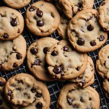

Cookies recipe

You can make fantastic looking cookies like these!!
Ingredients
- 100g lightly salted butter, at room temp
- 125g soft ligth brown or golden caster sugar
- 1 free-range egg
- 175g self-raising flour
- 100g chocolate chips, dark or milk, or 100g raisins (if you're fuckin weird)
Instructions
- Preheat the oven to 170C and line two baking trays with baking paper
- Using a stand mixer on medium speed, cream
the butter and sugar togehter for about 3 minutes until soft and pale.
Add the egg and mix for a further minue. Add the flour and mix with a rubber spatula until just combined,
then beat thoroughly. Stir in the chocolate chips or whatever.
- If you have time, cover the mixture and chill for 1 hour before
baking. Roll the dough into walnut-sized balls and arrange on the trays,
leaving space between them as they will spread during baking.
- Bake for about 12 minutes, or until the cookies are firm and golden brown at the edges. Leave
to cool on the baking trays; the cookies will firm further as they cool.
Source: "5-ingredient cookies", Annie Rigg, BBC